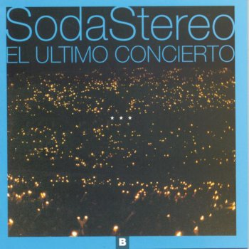

|  |
LetraPersiana AmericanaSoda Estereo |
Yo te prefiero
Fuera de foco
Inalcanzable
Yo te prefiero
Irreversible
Casi intocable
Tus ropas caen lentamente
Soy un espía, un espectador
Y el ventilador desgarrándote
Sé que te excita pensar hasta donde llegaré
Es difícil de creer
Creo que nunca lo podré saber
Sólo así yo te veré
A través de mi persiana americana
Es una condena agradable
El instante previo
Es como un desgaste
Una necesidad
Más que un deseo
Estamos al borde de la cornisa
Casi a punto de caer
No sientes miedo
Sigues sonriendo
Sé que te excita pensar hasta donde llegaré
Es difícil de creer
Creo que nunca lo podré saber
Sólo así yo te veré
A través de mi persiana americana
Tus ropas caen lentamente
Soy un espía, un espectador
Y el ventilador desgarrándote
Sé que te excita pensar hasta donde llegaré
Es difícil de creer
Creo que nunca lo podré saber
Sólo así yo te veré
A través de mi persiana americana
Lo que pueda suceder
No gastes fuerzas para comprender
Sólo así yo te veré
A través de mi persiana americana
Difícil de creer
Creo que nunca lo podré saber
Sólo así yo te veré
A través de mi persiana americana
Es difícil, difícil de creer
Creo que nunca lo podré saber
Sólo así yo te veré
A través de mi persiana americana